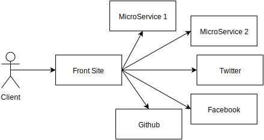
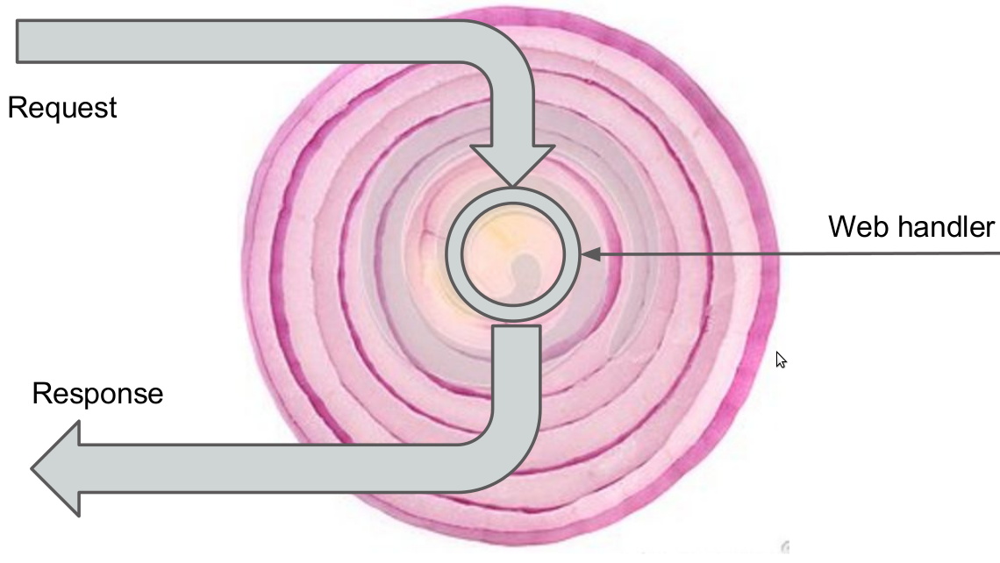
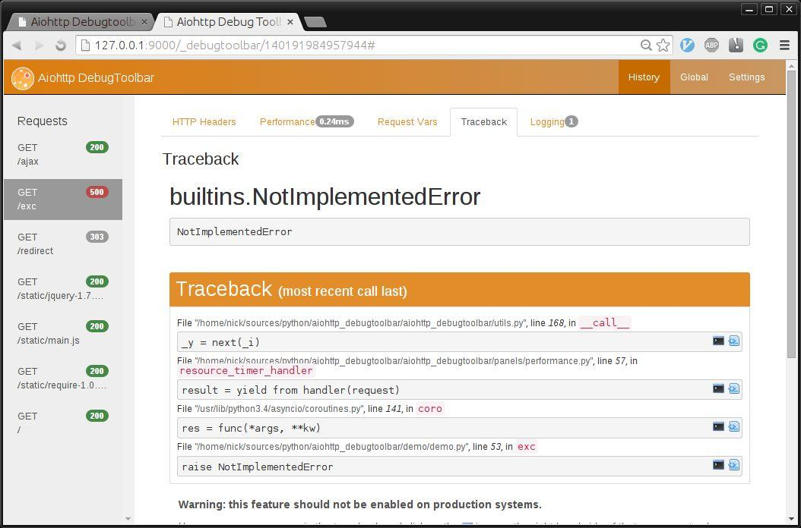

AIOHTTP Introduction
Andrew Svetlov
andrew.svetlov@gmail.com
Bio
- Use Python for more than 16 years
- Python Core Developer since 2012
- asyncio committer
- aiohttp maintainer
- Author of a dozen libraries under aio-libs umbrella
Why?
- 1,000 OS native threads
- 1,000,000 lightweight tasks
aiohttp -- asyncio-based web
- Client API
- Server
- Persistent connections
- Websockets
3 years long history
- Extracted from asyncio (former tulip)
- 22 releases so far
- 3100+ commits
- ~150 contributors
- 98% code coverage
Client API
Requests
import requests
r = requests.get('https://api.github.com/user',
auth=('user', 'pass'))
print(r.status_code)
print(r.text)
aiohttp
NO WAY!!!
Bare functions are deprecated
Requests with session
session = requests.Session()
r = session.get(url)
print(r.status_code)
print(r.headers['content-type'])
print(r.text)
Think about Keep-Alives
and cookies
aiohttp with session
async def coro():
async with aiohttp.ClientSession() as session:
async with session.get(url) as r:
print(r.status)
print(r.headers['content-type'])
print(await r.text())
Rule of thumb for coroutines
- Coroutine is an async def function
- Call a coroutine with await
- If a function contains awaits -- make it coroutine
async def func():
await asyncio.sleep(1)
async def other():
await func()
Multiple cuncurrent tasks
async def fetch(session, url):
async with session.get(url) as r:
assert r.status == 200
return await r.text()
tasks = [loop.create_task(fetch(session, url)
for url in ['http://google.com', 'http://python.org']]
res = await asyncio.gather(*tasks)

|
|

|
Timeouts
async def coro(session):
with aiohttp.Timeout(1.5):
async with session.get(url) as r:
...
Websockets
async with client.ws_connect(
'http://websocket-server.org/endpoint') as ws:
async for msg in ws:
if msg.data == 'close':
await ws.close()
break
else:
ws.send_str("Answer on " + msg.data)
Server
Django
from django.conf.urls import url
from django.http import HttpResponse
def index(request):
return HttpResponse("Hello, world")
urlpatterns = [
url(r'^$', index),
]
aiohttp
from aiohttp import web
async def index(request):
return web.Response(text="Hello, world")
app = web.Application(loop=loop)
app.router.add_route('GET', '/', index)
web.run_app(app)
Tornado
import tornado.ioloop
import tornado.web
class MainHandler(tornado.web.RequestHandler):
def get(self):
self.write("Hello, world")
app = tornado.web.Application([
(r"/", MainHandler)])
app.listen(8888)
tornado.ioloop.IOLoop.current().start()
Serverside websockets
async def handler(request):
ws = web.WebSocketResponse()
await ws.prepare(request)
async for msg in ws:
if msg.data == 'close':
await ws.close()
break
else:
ws.send_str(msg.data + '/answer')
return ws
tips and tricks
Development cycle
- Use single process for dev environment
- Make test run easy
- Deploy separately in different processes/containers/nodes
Say NO to celery
async def long_running_operation():
...
loop.create_task(long_running_operation())
Debug mode: problem
async def f():
fut = asyncio.Future()
fut.set_exception(RuntimeError())
del fut
...
ERROR:asyncio:Future exception was never retrieved
future: Future finished exception=RuntimeError()
RuntimeError
PYTHONASYNCIODEBUG=1
$ PYTHONASYNCIODEBUG=x python myapp.py
ERROR:asyncio:Future exception was never retrieved
future: Future finished exception=RuntimeError() created at filename.py:10
source_traceback: Object created at (most recent call last):
...
File "filename.py", line 10, in f
fut = asyncio.Future()
RuntimeError
Explicit loop
async def fetch_all(urls, *, loop):
async with aiohttp.ClientSession(loop=loop):
...
loop = asyncio.get_event_loop()
asyncio.set_event_loop(None) # !!!
await fetch_all(urls, loop=loop)
Utilize keep-alives
async def fetch_all(urls, *, loop):
tasks = []
async with aiohttp.ClientSession(loop=loop):
for url in urls:
tasks.append(loop.create_task(fetch(url), loop=loop))
await asyncio.wait(tasks, loop=loop)
Testing
class Test(unittest.TestCase):
def setUp(self):
self.loop = asyncio.new_event_loop()
asyncio.set_event_loop(None)
def tearDown(self):
self.loop.close()
def test_func(self):
async def go():
self.assertEqual(1, await func(loop=self.loop))
self.loop.run_until_complete(go())
Testing with pytest-aiohttp
def create_app(loop, path, handler):
app = web.Application(loop=loop)
app.router.add_route('GET', path, handler)
return app
async def test_hello(test_client):
async def hello(request):
return web.Response(body=b'Hello, world')
client = await test_client(create_app, '/', handler)
resp = await client.get('/')
assert resp.status == 200
text = await resp.text()
assert 'Hello, world' in text
No global objects!!!
from motor.motor_asyncio import AsyncIOMotorClient
DBNAME = 'testdb'
db = AsyncIOMotorClient()[DBNAME]
async def register(request):
post_data = await request.post()
login, password = post_data['login'], post_data['password']
matches = await db.users.find({'login': login}).count()
...
Application as a storage
async def register(request):
post_data = await request.post()
login, password = post_data['login'], post_data['password']
matches = await request.app['db'].users.find({'login': login}).count()
...
DB init and shutdown
def make_app(loop=None):
app = web.Application(loop=loop)
mongo = AsyncIOMotorClient(io_loop=loop)
db = mongo['testdb']
app['db'] = db
async def cleanup(app):
mongo.close()
app.on_cleanup.append(cleanup)
...
return app
Middlewares
Request lifecicle and middlewares
Server-side sessions
from aiohttp_session import get_session
async def hander(request):
session = await get_session(request)
session['key'] = 'value'
return web.Response()
Debug Toolbar
Questions?
Andrew Svetlov
andrew.svetlov@gmail.com
@andrew_svetlov